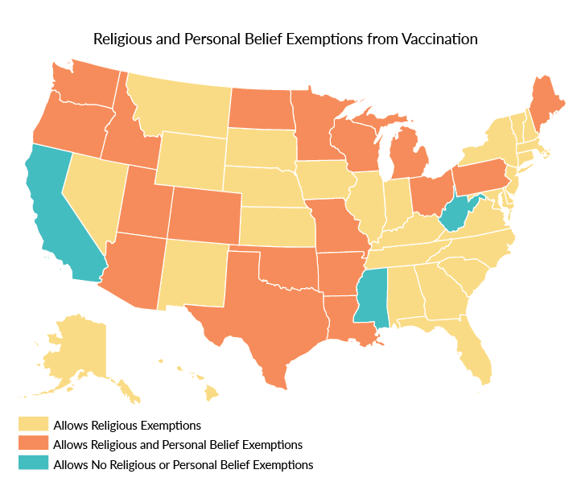

-
Coverage
-
Preventable Outbreaks
Percentage of Complete Immunizations per State
Overview & Main Map Narrative

Declining Vaccinations in Washington State
Washington has one of the worst immunization histories in the United States. It accepts medical, religious, and personal/philosophical exemptions and has consistently been one of the top 10 states to report the most vaccine exemptions for children enrolled in kindergarten. Due to the culture, more parents are choosing to opt out of state immunization requirements. From 2015-2016, only 85% of children entering kindergarten in Washington were completely immunized. This is up from 2008-2009 where only 78.5% of children entering kindergarten were immunized, but it is still lower than 89.45% in 2003-2004.
While the percent of children completely vaccinated might be lower than it was in the past, it certainly has improved since its low point from 2008-2009. This is because lawmakers have pushed for more funding and stricter bills that makes opting out of vaccinations more difficult. In 2010, Washington formed the Washington Vaccine Association. This nonprofit organization was formed by the state legislature and helps purchase vaccines and distribute them to providers for no charge. In 2011, Washington adopted a law that requires parents to obtain a licensed healthcare provider’s signature if they wish to exempt their children. Within the first year the legislation had already decreased exemption rates from 6.0% to 4.5%.
While these are methods are helping improve vaccinations in Washington, the counties are still well below the average of recommend vaccinations. In May of 2015, Washington reintroduced a Bill that would eliminate personal belief and philosophical exemptions. However, this Bill is currently pending and is waiting for a vote.
New York Case Narrative
In December 2014, Disneyland, located in Orange County, experienced the symptoms of low vaccination rates first-hand.
A measles outbreak swept across the park. Measles is a highly contagious virus that can have serious, even fatal
consequences. Vaccination against this virus is necessary to prevent its spread. At least 147 cases from the
Disneyland outbreak were reported, including 131 in California. The source is believed to have originated from an
international visitor. The outbreak was attributed to the lowest rates of vaccination coverage in the state in the past
five years. This prompted the government and health officials to scrutinize the state of vaccination in California.1
In reaction to the Disneyland outbreak, California Senate Bill 377 was drafted. In an effort to increase coverage,
this bill removes the option of personal belief or religious exemptions from vaccinations for a child entering kindergarten
in a public school. This makes California only one of three states in America to have such a ruling.2
In response to the bill, advocates have adamantly fought against the bill,
launching petitions and efforts to recall elected officials that voted for the bill. Some argue that SB277 is
unconstitutional and violates medical freedom. Additionally, the bill is also believed to infringe upon the right to a
public education, as children are now prohibited from entering a public school without the required vaccinations.3
While statistics on vaccination since the enactment of SB377 have yet to be released, California
is already moving in the direction of increased coverage and decreased exemptions. Between the 2015-2016 and 2013-2014
school years, personal belief exemption rates decreased from 3.15% to 2.38%. Also during this time, coverage increased
from 90.2% to 92.9%. While it is actually somewhat difficult to draw direct correlations between legislation and disease numbers,
considering the impacts that SB377 will have on coverage in time will stir important dialogue regarding the impacts that
government can have on public health and whether the individual rights of its citizens are preserved.4